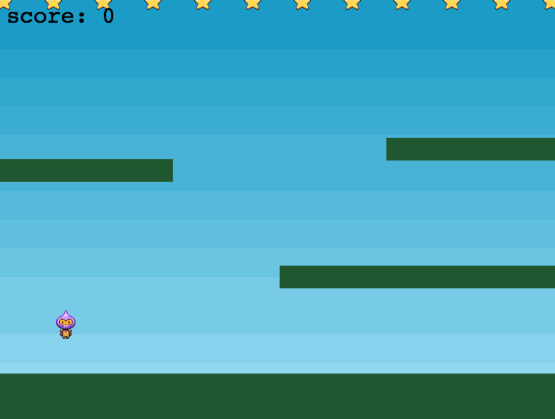
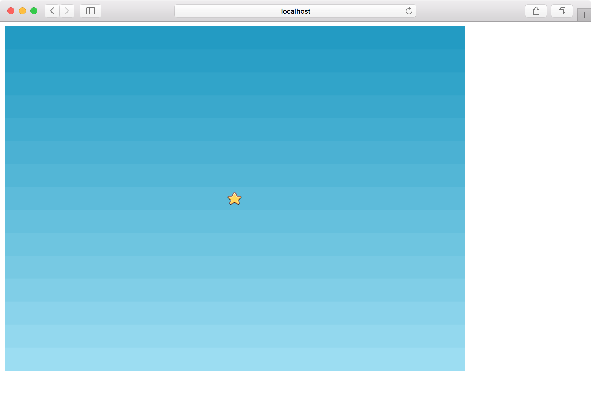
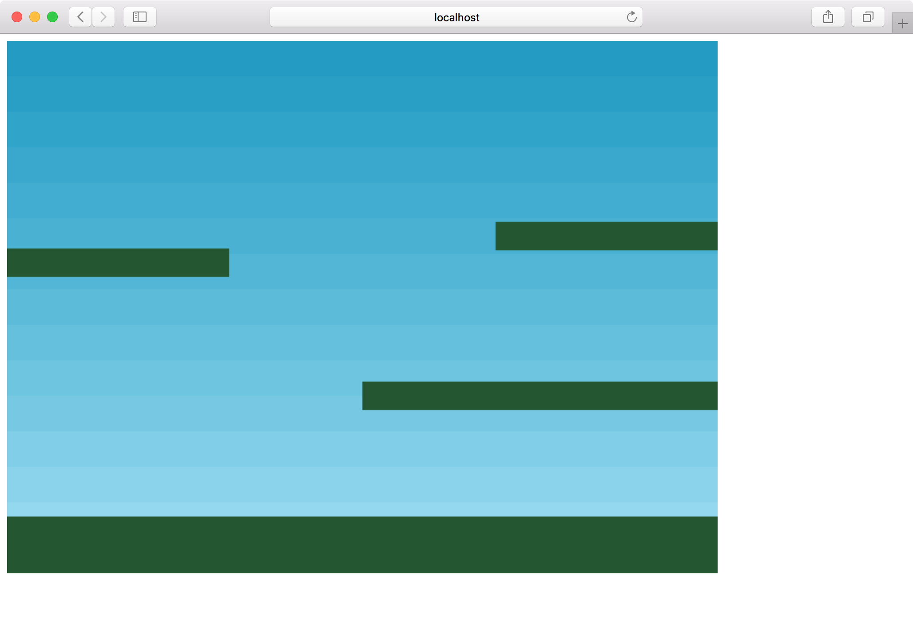

公式チュートリアルをやる その1
今日は公式サイトのMaking your first Phaser 3 gameに沿って初めてのゲームを作ってみます。
作るのはこのような星取りゲームです。
基本的に本家の通り進めていきますが、記法はモダンなJSで書きたいため、前回作ったhttps://github.com/tnantoka/hello-phaser-webpackをベースにします。

プロジェクト作成
$ git clone git@github.com:tnantoka/hello-phaser-webpack.git phaser-first-game
$ cd phaser-first-game
$ yarn install
$ yarn start
$ open http://localhost:8080/
これでHello World!が動く状態になります。
assetsの準備
http://phaser.io/tutorials/making-your-first-phaser-3-game/phaser3-tutorial-src.zipをダウンロードして、中身のassetsをdist/assetsに配置します。
index.jsの準備
src/index.jsを以下の内容に書き換えます。
ES2015の記法によりsceneの中身が元のチュートリアルより少しスッキリしています。
const config = { type: Phaser.AUTO, width: 800, height: 600, scene: { preload, create, update } }; const game = new Phaser.Game(config); function preload() { } function create() { } function update() { }
typeはAUTOにしておくとデフォルトでWebGLが、未対応のブラウザーではCanvasが使われます。
Phaser.CANVAS, Phaser.WEBGLとして自分で指定することもできます。
widthとhightはそのまま幅と高さです。
他の設定項目はhttps://photonstorm.github.io/phaser3-docs/global.html#GameConfigに載っています。
この状態で実行すると800 x 600の真っ黒の画面が表示されます。
画像を読み込む
preloadを実装して、4つの画像と1つのスプライトシートを読み込みます。
preloadはゲームのシーン作成の前に処理される関数です。
function preload() { this.load.image('sky', 'assets/sky.png'); this.load.image('ground', 'assets/platform.png'); this.load.image('star', 'assets/star.png'); this.load.image('bomb', 'assets/bomb.png'); this.load.spritesheet('dude', 'assets/dude.png', { frameWidth: 32, frameHeight: 48 }); }
スプライトシートは、以下のようにスプライトが並んだ画像を用意し、分割されるフレームのサイズを指定します。

画像の表示
createはゲームのシーン作成時に呼び出される処理です。
今回はここで2つの画像を表示します。
function create() { this.add.image(400, 300, 'sky'); this.add.image(400, 300, 'star'); }
skyはゲームのサイズと同じく800 x 600です。Phaserのオブジェクトは中心を基準に配置されるため、400 x 300を指定することで空が全面に配置されます。
また、デフォルトでは後に追加した画像の方が上になるため、星が空より手前に表示されます。

物理演算
次にステージの床を表示します。
これ以降、物理演算の機能を使うため、configにphysicsの設定を追加します。
physics: {
default: 'arcade',
arcade: {
gravity: { y: 300 },
debug: false
}
},
defaultには物理演算のモードを指定します。Impact.jsやMatter.jsモードも用意されているようですが、シンプルな用途ではarcadeで十分そうです。
gravityは重力です。debugをtrueにするとBodyが枠で囲まれて目に見えるようになります（物理エンジンでおなじみの機能）
これで準備はOKなのでcreateで床を表示します。
先程追加した星は消します。
const platforms = this.physics.add.staticGroup(); platforms.create(400, 568, 'ground').setScale(2).refreshBody(); platforms.create(600, 400, 'ground'); platforms.create(50, 250, 'ground'); platforms.create(750, 220, 'ground');
staticGroupに登録されたオブジェクトは自動で静的になるので、動かなくなります。
一番下の床は大きくしたいのでsetScale(2)をしています。静的なオブジェクトは手動で更新する必要があるのでrefreshBodyを呼びます。
このあたりはhttps://photonstorm.github.io/phaser3-docs/Phaser.Physics.Arcade.Sprite.htmlに記載があります。
これでステージの床が表示されました。

今回はここまでです。
本家チュートリアルの4回目までが終わりました。